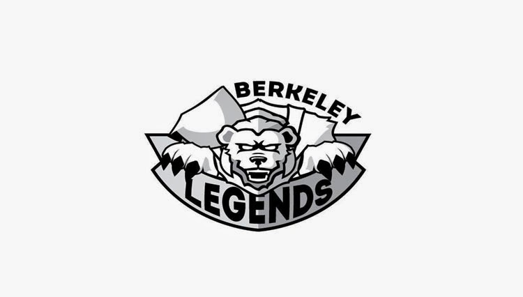

Blog
Riot Tech Talk at Cal
If you’re in the middle of an intense ranked game and lag out, just think about Chris Cobb (who gets woken up at 3 a.m. to fix the servers) before swearing vengeance. Cobb, like all of the engineers at Riot Games, values the engineering culture set in place: player focus! To spread that message and give insight on working with one of the fastest growing game developers, a Riot Tech Talk was held at UC Berkeley on September 24.
Deadlines are approaching for Riot Games’ technical internships in engineering, quality assurance, and insights. The tech talk, which was held from 4 p.m. to 6:30 p.m., was lead by representatives from each of those departments. Ben Huang from insights, Chris Cobb from engineering, Zachary Burggraf from quality assurance, and Andre Ben Hamou as the engineering manager were all on campus at Evans Hall.
Prior to the talk Huang, Cobb, Burggraf, and Ben Hamou attended the EECS Career Fair at the RSF from 11 a.m. to 3 p.m. It was a long day and filled with early flights, but they all managed to give an energetic and charismatic presentation to a room of over one-hundred students.
“One of my personal goals is helping push people on mastery of craft,” Ben Hamou said. “That can be done in so many ways, but one of them is to speak enthusiastically about really abstract concepts and how they actually apply in real software engineering.”
With an organized power point, detailed speech, and facilitating questions with the crowd Ben Hamou’s talk could have been easily mistaken as an engineering course at Cal. If there is anything to be taken out of his presentation, Ben Hamou says it’s “understanding and applying functional programming idioms and knowing what tools will help you do so.” It can truly differentiate okay engineers from outstanding engineers in the industry.
During the other half of the talk, which was dedicated to engineering culture and Riot culture, Burggraf revealed the most asked interview question at Riot Games. It is also surprisingly the question most applicants fail: “What games do you play?”
“The wrong answer is ‘League of Legends’ and just stopping there,” said Burggraf.
After attending the Riot Tech Talk Angie Warstler, a third year Computer Science major, feels that she needs to work harder and still has a lot to learn.
“The talk helps you think about what you need to focus on,” Warstler said. “Learning the more technical things – the things that aren’t as fun at first glance – are also really important.”
Youri Park, president of Berkeley Legends, constantly collaborates with Riot to make these events on campus happen. Park says Riot employees as well as herself were “pleasantly surprised by how many members are coming out to these events.” Initially they were expecting about 30 students to attend the Riot Tech Talk.
Berkeley Legends had an info session, Q&A, and LAN party with Riot spring semester 2014. Park says that Berkeley Legends is working to create a similar event this November for the non-technical internship opportunities.
For more information about Riot Internships and application deadlines visit http://www.riotgames.com/NAinternships
Come join Berkeley Legends at the next event October 18 and 19 – the World’s Viewing Party! See you there, summoners!
September 25, 2014 | Cassandra Reynoso
Berkeley Legends First General Meeting Fall 2014

"Team Riot Games. Team Siren. Team TSM. Team Challenger League Gaming. Team Boner Police."
As you can see, there were definitely no limits on creativity. These were just some of the team names people came up with during the Berkeley Legends first general meeting on Wednesday, September 10.
The general meeting began at 7:00 p.m. and was held at 60 Evans – which was just big enough to hold the 100+ people that showed up! President of Berkeley Legends 2014-2015, Youri Park, announced this year’s executive officers and what Berkeley Legends is all about.
To help members (new and old) get to know each other, there were some fun ice breakers. The first ice breaker consisted of post it notes with various champion names written on them. Each member took a post it, and without looking at their own post it they had to place it on their forehead. For a couple of minutes members walked around asking each other questions, trying to guess what champion they have written on their forehead.
The final ice breaker of the meeting – which produced the unique team names – was League of Legends Jeopardy. There were six different categories to choose from and a point system ranging from 100 to 500. Some of the questions included, “Which champion was released after Lissandra?” and “Who is Leona’s childhood friend?” There was definitely a competitive spirit in the air with League of Legends lanyards and wristbands up for grabs for the winning team!
During the meeting, Park also revealed some important Berkeley Legends events happening throughout the semester. Members should look out for:
- Dot Island Fundraiser (September 17)
- Riot Tech Talk (September 24)
- World’s Viewing Party (October 19)
- LAN B4 Time (Mid-November)
- ARAM Tournament (TBA)
GL and HF this semester!
October 10, 2014 | Cassandra Reynoso